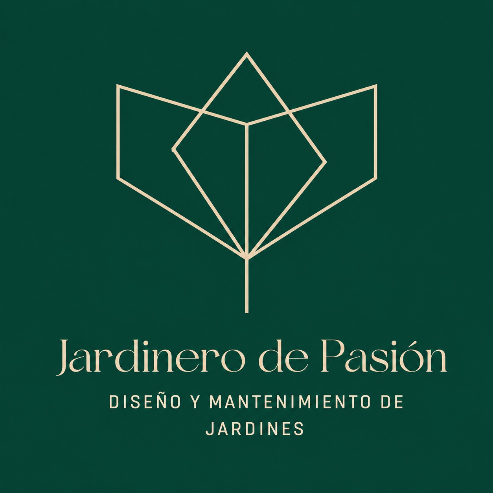

Diseño, mantenimiento, poda y riego para casas, condominios y espacios comerciales en el Gran Área Metropolitana.
Servimos el Gran Área Metropolitana
— Magdiel Huerta Mairena · Fundador
De la primera visita al mantenimiento continuo: un solo equipo cuida tu jardín en cada etapa.
Antes, durante y después. Cada proyecto refleja el cuidado y la pasión que ponemos en cada espacio.
Fotografías reales de proyectos realizados por Jardinero de Pasión. Toca cualquier imagen para verla en detalle.
Claro, ordenado y sin sorpresas: sabes qué esperar en cada paso.
Conocemos tu espacio, escuchamos lo que buscas y evaluamos plantas, suelo y riego.
Propuesta a la medida con materiales, plantas y una cotización detallada y transparente.
Manos a la obra con un equipo cuidadoso, puntual y respetuoso con tu propiedad.
Poda, riego y cuidado programado para que tu jardín luzca impecable todo el año.
“Dejaron nuestro jardín mejor de lo que imaginamos. Puntuales, cuidadosos y con un gusto excelente. Ahora es el lugar favorito de la casa.”
Cuéntanos sobre tu jardín por WhatsApp y te preparamos una cotización sin compromiso.
Hacemos que tu jardín luzca como nuevo, sano y lleno de vida.
Escribir por WhatsApp